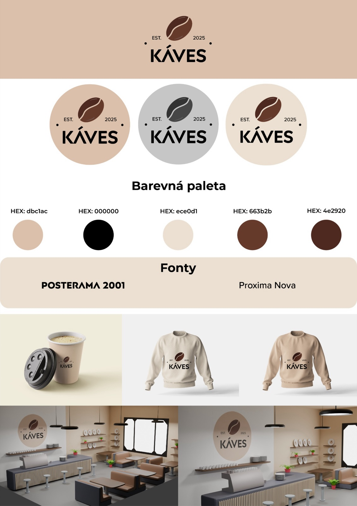
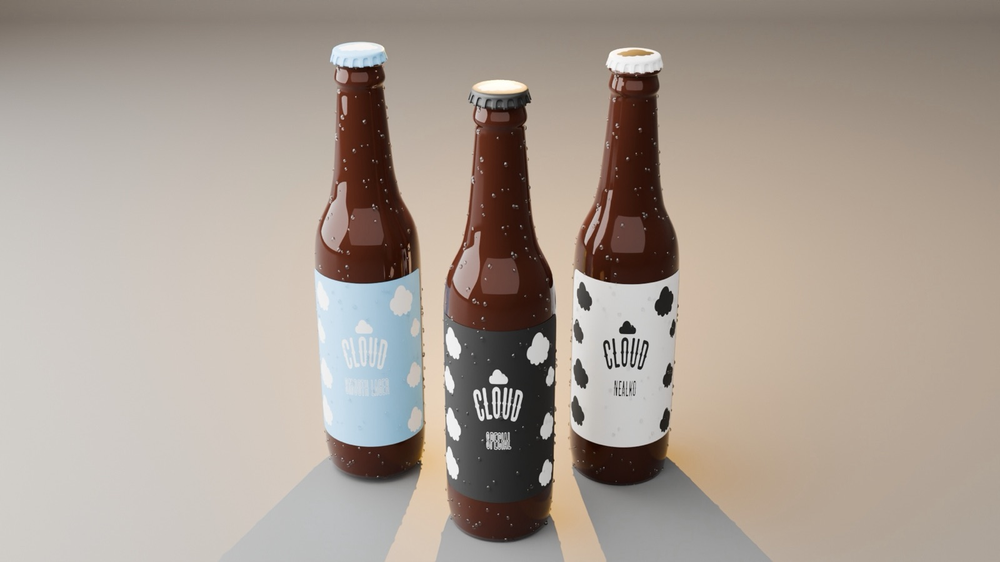
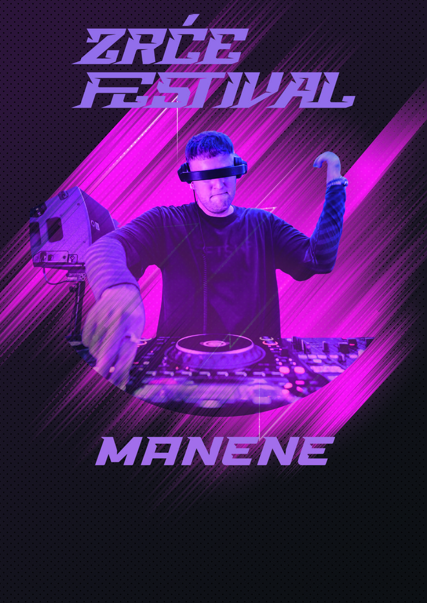
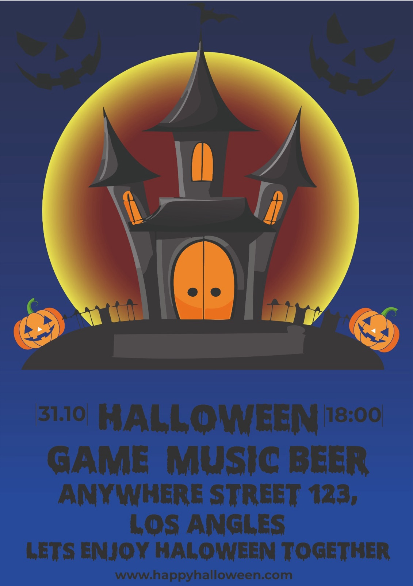
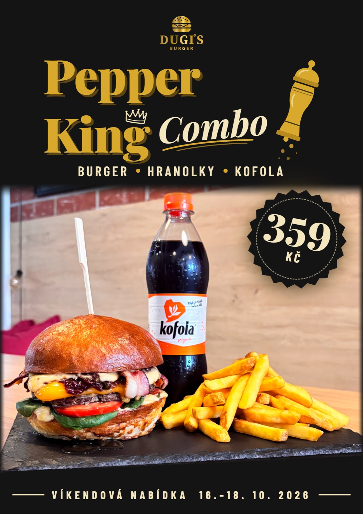
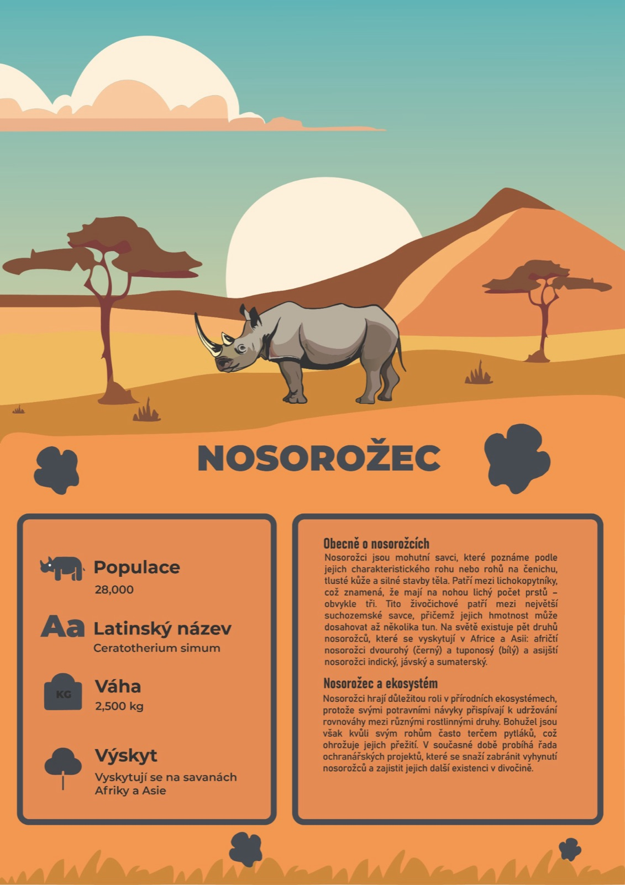

Náhled webu
Webdesign
Navštívit web →
XERIA spol. s r.o.
Firemní web výrobce nádob a vík pro distribuční transformátory.
Poslední 3 roky proměňuju nápady v plakáty, loga, obaly a uživatelská rozhraní. Pár věcí si přitom umím i sám naprogramovat — od jednoduchého webu po interaktivní detail.
Jsem grafický designér, který má kromě Illustratoru a Photoshopu otevřený i editor kódu. Většinu času řeším vizuální identitu, tiskoviny a digitální design, ale rád si projekt i sám naprogramuju — ať jde o jednostránkový web, nebo drobnou interaktivní animaci.
Baví mě práce, kde má každý detail svůj důvod: zvolené písmo, mezera mezi řádky, barva, která se vrací v celém systému. Pracuju rád v malém týmu i samostatně, s jasným zadáním i s prázdnou stránkou.
Zaměření na základy grafického designu a digitálního vývoje.
Základy kresby, typografie a digitální grafiky. Rozšíření zkušeností s Adobe balíkem a sazbou.
Ateliér grafického designu, současné tendence v grafickém designu, písmo, typografie, realizační technologie oboru, klasické grafické techniky, vizuální kompozice, výuka kresby, teorie a metodologie designu, digitální prezentace a kompozice, současné výtvarné umění.
Samostatná spolupráce se známými — loga, plakáty, sociální sítě a jednoduché webové prezentace včetně kódování.






Firemní web výrobce nádob a vík pro distribuční transformátory.
Web burgerové restaurace s menu, rezervací stolu a kontaktem.
Ozvi se s čímkoliv od jednoho loga až po kompletní vizuální identitu. Obvykle odpovídám do dvou pracovních dnů.